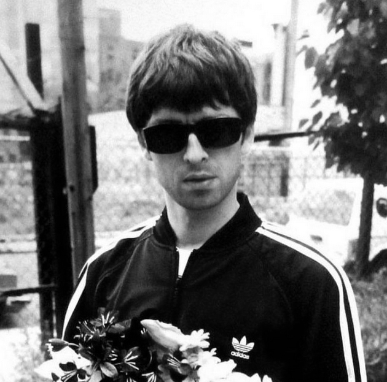
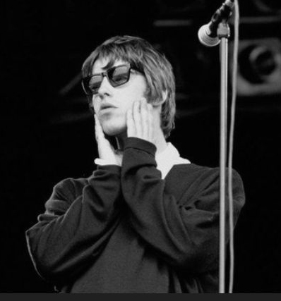

QUOTES

"Jazz is rubbish. Let's talk about rock 'n' roll. Nobody likes jazz apart from people who wear f*cking jackets like that."
-Noel Gallagher(talking with interviewer about jazz)

"I'm not into writting f*king morbid music mate, like the rest of these pri*ks that are playing here. Music should be an uplifting thing"
-Liam Gallagher(on grunge bands)
"There was a period where we were f*cking untouchable. It was short, maybe two years, but we were up there with greats."
-Noel Gallagher
"I refuse to dance. And I can’t dance anyway. I’m not in a band for that."
-Liam Gallagher
"I don’t much like ‘Wonderwall,’ but the effect that song has on people, I can’t deny it."
-Noel Gallagher
"Being a lad is what I’m about. I can tell you who isn’t a lad: anyone from Blur."
-Liam Gallagher
"I didn't really take guitar seriously until Liam asked me to join Oasis."
-Noel Gallagher
"Oasis was like a Ferrari: great to look at, great to drive, and it’ll f*cking spin out of control every now and again."
-Liam Gallagher
"We were just lads from a council estate. Two brothers. Head cases."
-Noel Gallagher
"If I lost my hair you would never see me on that stage again, because there’s no place for baldness in rock n' roll."
-Liam Gallagher
"Liam got a Rolex. I got a Rolls Royce. Which is brilliant, cos I can't drive and Liam can't tell the time."
-Noel Gallagher
"Would I give Noel a kidney? Without a doubt. Of course I would. He’s my brother, man, and I love him."
-Liam Gallagher
"My first instinct when I write songs is not a negative one. Everything I’ve ever done has some form of hope in it, I think."
-Noel Gallagher
"I don't worship John Lennon. I'm just intrigued by his life and how being a good person you can still come across like a c*nt."
-Liam Gallagher
"Not being loved and not being able to love. That's my biggest fear."
-Liam Gallagher
If somebody asks me what I think about certain things I say what I genuinely feel is in my heart. My conscience is clean, d’you know what I mean? Y’know, I’m true to myself — f*ck everybody else."
-Noel Gallagher